In the 1970s, Csikszentmihalyi and his team gave hundreds of people electronic pagers and asked them to record how they felt whenever the device buzzed. Eight times a day, at random intervals, people noted what they were doing and how happy they were. The results overturned almost everything the researchers expected. Assembly-line workers reported feeling most alive not while relaxing in front of the TV, but when they were lost in the rhythm of a task. Surgeons described operations as more rewarding than their evenings off. Rock climbers, chess masters, composers, mothers reading to their children all described a specific state of mind using nearly identical words, regardless of culture, age, or background.
They called it floating. Being carried along. Being in the flow.
This wasn't relaxation. It wasn't pleasure in any conventional sense. It was something sharper and more complete: a state of total absorption where the self dissolves, time distorts, and the activity becomes its own reward.
Csikszentmihalyi had spent twenty-five years studying why some people thrive while others merely endure. His conclusion cuts against most assumptions about what makes life good. Wealth doesn't do it. Leisure doesn't do it. Comfort doesn't do it. What does it is control over the contents of consciousness, moment by moment.
That is the argument of this book.
By the end, you will discover:
- Why happiness cannot be pursued directly, and what to do instead.
- Why a factory worker doing the same task six hundred times a day can enjoy his job more than a vacationer at a luxury resort.
- Why boredom and anxiety are not opposites of flow, but its two guardrails.
- Why losing yourself in an activity is actually how the self grows stronger.
- How to turn virtually any experience, including adversity, into a source of meaning.
The 1-Minute Summary
Happiness is not something that happens to you. It is a condition you must actively create by learning to control the contents of consciousness.
The state that makes this possible is flow: a condition of total absorption in a challenging activity, where skills and demands are perfectly matched. In flow, self-consciousness disappears, time distorts, and the activity becomes intrinsically rewarding.
The conditions for flow are: * A clear goal * Immediate feedback * A challenge level that matches your current skill * Full concentration on the task
Flow is available everywhere, from an assembly line to a kitchen, from chess to conversation. What blocks it is not a lack of opportunity, but a lack of attention.
At the level of a whole life, meaning comes from unifying all your goals into a single overarching purpose, and pursuing it with full resolve. When purpose, skill, and action align, even ordinary moments become extraordinary.
If this breakdown resonates, explore more at longform.online
Module 1: The Myth of the Good Life
There is a woman in the Italian Alps named Serafina Vinon, seventy-six years old, who wakes at five in the morning to milk her cows. She knows every tree and boulder on her mountain as though they were old friends. Family legends going back centuries are tied to the landscape: the stone bridge where the last survivors of the 1473 plague found each other and married, the raspberry field where her grandmother got lost as a girl.
When Csikszentmihalyi asked her what she enjoyed most in life, she had no hesitation: milking the cows, taking them to the pasture, tending the orchard, carding wool.
When he asked what she would do if she had unlimited time and money, she laughed.
Then she gave the same list.
Serafina is not ignorant of the alternatives. Her relatives drive cars and take vacations abroad. She has seen what modern life looks like. She has simply chosen something different, because it provides something their more fashionable lives do not: a complete, unified, purposeful engagement with existence.
Csikszentmihalyi opens Flow by noting that this kind of life is almost paradoxically rare in the wealthiest, most technologically advanced era in human history. Despite unprecedented comfort, anxiety and boredom are everywhere. People end up feeling their lives have been wasted. Progress in the external world has produced almost no progress in the internal one.
This isn't a failure of material progress. It is evidence that material progress doesn't address the right problem.
The right problem is this: happiness is not a destination. It is a skill.
"Happiness, in fact, is a condition that must be prepared for, cultivated, and defended privately by each person." — Mihaly Csikszentmihalyi
Two obstacles make this truth hard to accept. The first is the nature of the universe itself. The cosmos was not designed with human comfort in mind. It is indifferent. Random events destroy plans. Pain is woven into the fabric of life. No amount of money or power makes you immune to loss.
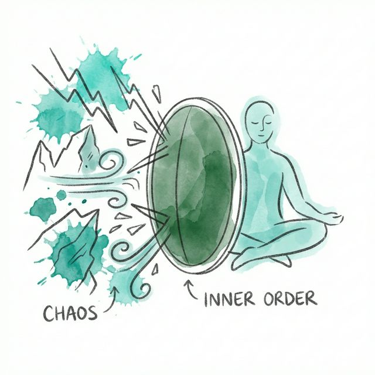
The second obstacle is the treadmill of rising expectations. As soon as a goal is achieved, a new desire replaces it. Cyrus the Great had ten thousand cooks preparing new dishes for his table. We now have access to every cuisine on earth. Yet the sense of sufficiency never arrives. The threshold for satisfaction keeps moving.
Both obstacles share the same structure: they are external. And external fixes cannot produce lasting internal order.
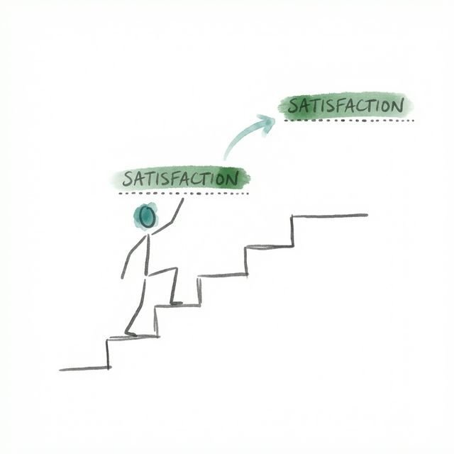
The only way through is inward. Not through introspection or therapy, necessarily, but through something more active: learning to control what happens in consciousness from moment to moment.
That requires understanding how consciousness works. And that understanding begins with something Csikszentmihalyi calls psychic energy.
Module 2: The Architecture of Attention
Consciousness, as Csikszentmihalyi describes it, is not a passive mirror. It is a highly selective filter. At any given moment, the nervous system can process roughly 126 bits of information per second. To understand what a single person is saying to you requires about 40 bits. To understand three people speaking at once is technically possible, but only by excluding almost everything else from awareness.
This limitation is not a flaw. It is the mechanism through which experience is made meaningful.
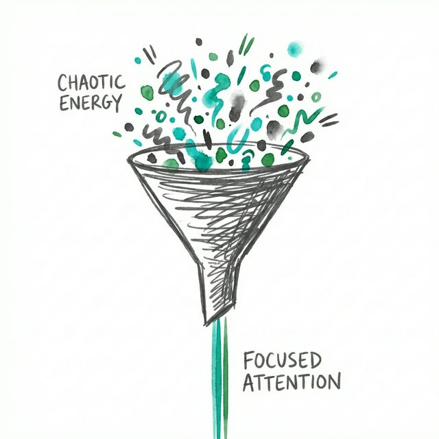
Think of it this way: if you paid equal attention to everything, you would pay real attention to nothing. The act of attending to something is also the act of excluding everything else. This is what makes consciousness powerful. It orders the world.
The currency of consciousness is what Csikszentmihalyi calls psychic energy. Attention is energy. Where you invest it determines what your life is made of. Not in a metaphorical sense. Literally. The memories you form, the skills you build, the relationships that deepen or wither, all depend on where attention goes.
This is why two people at the same party can be having completely different experiences. One person is absorbed in conversation, feeling alive. The other is monitoring how they look and feeling drained. The room is identical. The inner experience is not.
Csikszentmihalyi describes two contrasting figures to illustrate this. E., a European woman of international reputation, manages her psychic energy with extraordinary precision. She never wastes a minute. She reads, plans, observes, asks questions constantly. She can fall asleep at will when a free moment appears and wake refreshed. Despite having lost everything twice, during two world wars, she rebuilt her inner life each time by refusing to diffuse attention on what could not be changed.
The opposite of this is psychic entropy: the state when information in consciousness conflicts with goals, and attention is hijacked by worry, fear, or rumination. A factory worker named Julio, anxious about a flat tire he can't afford to fix, spends his entire workday distracted. He snaps at colleagues. His performance suffers. The tire is not in his mind as a fact. It is in his mind as a threat. And threats commandeer attention.
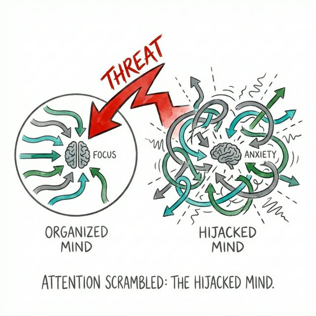
The self, in Csikszentmihalyi's model, is also just information. It is the pattern of goals, memories, and values that give continuity to experience. When information from the outside world aligns with the self's goals, consciousness flows smoothly. When it conflicts, disorder spreads.
Order and disorder are not metaphors here. They describe measurable states of information processing.
Flow is what happens when order wins completely.
But what does that actually feel like? And how does it happen?
Module 3: What Flow Actually Is
Rico Medellin works in a factory on Chicago's South Side assembling railroad cars. His task takes forty-three seconds to complete. He repeats it nearly six hundred times a day. Most people would consider this soul-destroying. Rico has been doing it for five years and still looks forward to work.
His secret is simple. He treats the job like an Olympic event.
How fast can he do it today? Can he beat yesterday's record? He has worked out every movement with painstaking care, the angle of his wrist, the sequence of his hands, shaving seconds with surgical precision. His best average is twenty-eight seconds per unit. Nobody else comes close.
When he is at top performance, Rico says, "It's better than anything else. It's a whole lot better than watching TV."
Rico has engineered flow for himself in an objectively boring situation. Csikszentmihalyi uses him as evidence for the central claim of the book: flow is not something that comes from circumstances. It is something that can be created.
The term flow came from Csikszentmihalyi's research subjects themselves. When asked to describe their best experiences, they kept reaching for the same metaphor: a current, a river, a forward movement that carried them along without effort. The chess player, the dancer, the surgeon, the mother reading with her child all described the same state using the same word.
The flow experience has eight recurring features:
- A task that has a real chance of completion
- Concentration focused entirely on the task
- Clear goals
- Immediate feedback
- A sense of control without worry about control
- Loss of self-consciousness
- Distorted sense of time
- The activity becoming an end in itself
No single feature is sufficient. The full experience requires all eight. But the engine running underneath all of them is a single mechanism: the balance between challenge and skill.
This is the challenge-skill ratio, and it is the key to understanding flow.
Imagine a graph with skills on one axis and challenges on the other. When challenges far exceed skills, the result is anxiety. When skills far exceed challenges, the result is boredom. Flow lives at the line where the two are perfectly matched.
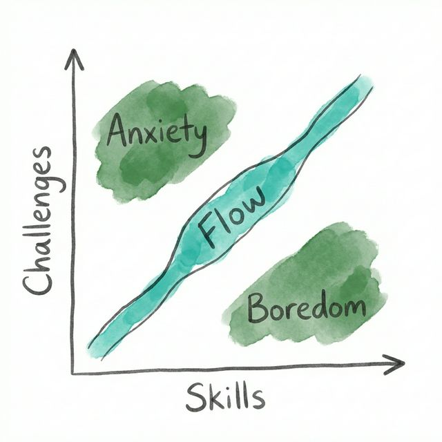
This line is not static. As skills improve, yesterday's challenge becomes today's boredom. A beginner tennis player feels flow just getting the ball over the net. An intermediate player needs a stronger opponent. A champion needs a grand slam match. The same task at different skill levels produces completely different inner experiences.
What makes this dynamic rather than fixed is what Csikszentmihalyi calls the growth of the self. Every time you rise to a genuine challenge, the self becomes more complex. You become capable of more. This is why flow is not just pleasant in the moment. It builds you over time.
The opposite is equally true. When you consistently operate below your capacity, when you take no risks and face no genuine challenges, the self contracts. Not dramatically. Quietly. You become less capable of experiencing life deeply, because you have trained yourself to stay in shallow water.
Rico already knows this. When he reaches the limit of what's possible on the assembly line, he has enrolled in electronics courses. He is preparing to move to harder challenges. He doesn't want to stagnate at peak performance. He wants to keep growing.
This is the logic of flow applied across a lifetime. But flow and growth require one more ingredient: understanding the difference between pleasure and genuine enjoyment.
Module 4: The Anatomy of Enjoyment
There is a difference between pleasure and enjoyment. Csikszentmihalyi insists on this distinction because it matters enormously.
Pleasure is what happens when something returns consciousness to a comfortable state after a need has been met. You eat when hungry. You rest when tired. You watch television after a draining day. Pleasure restores order. But it does not create growth. After it passes, you are exactly who you were before.
Enjoyment is different. It is what happens when you exceed what was expected of you, including your own expectations. A close game of tennis. A book that rewires how you see something. A conversation that leads you to articulate an idea you didn't know you had. Enjoyment requires effort, concentration, and engagement. And after it passes, you are changed.
Csikszentmihalyi tells the story of Signor Orsini, an old antique dealer in Naples. One morning, a prosperous American tourist walked in and immediately agreed to pay his exorbitant asking price for a pair of baroque cherubs without negotiating. Orsini turned purple. He escorted her out.
"I enjoy the clash of wits involved in bargaining," he told Csikszentmihalyi afterward. "She didn't even flinch. She didn't know any better. If I had sold those pieces to that woman at that ridiculous price, I would have felt cheated."
Orsini wasn't chasing money. He was chasing engagement. The pleasure of a transaction wasn't the transaction itself. It was the contest of minds. Without that, the sale had no value.
This distinction cuts through a great deal of confusion about what makes a good life. People pursue pleasure because it is easy to obtain and reliably satisfying in the short term. But pleasure scales poorly. The second piece of cake is less satisfying than the first. Passive entertainment provides diminishing returns. Pleasure is additive but not compounding.
Enjoyment, by contrast, compounds. As you develop skills in a domain, you notice finer distinctions. The musician who once heard only rhythm now hears texture, phrasing, the breath between notes. The art critic who once saw only composition now reads cultural context, historical argument, the painter's anxiety. Each deepening of skill opens new territory to explore.
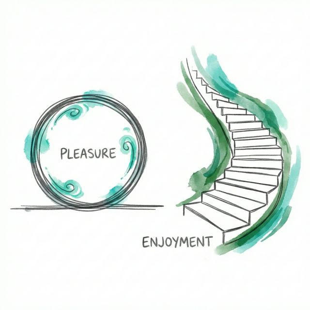
Csikszentmihalyi identifies the central paradox of optimal experience: the moments that feel best are usually not relaxing. They are effortful. The swimmer whose muscles burned during his most memorable race. The climber frightened and exhilarated at the same time. The writer who couldn't stop. These are not comfortable experiences in the conventional sense.
But they are what people remember as the best moments of their lives.
The reason is that they involve the whole person. Mind, body, intention, and action all pointed in the same direction. When that happens, something remarkable occurs: the self temporarily disappears.
Not into nothing. Into the activity itself.
The rock climber becomes the rock face. The dancer becomes the music. The chess player becomes the game. Self-consciousness, that persistent narrator commenting on how things are going, goes quiet. And when it does, the result is a kind of freedom that ordinary comfort rarely provides.
This freedom is available in more places than most people realize. Flow doesn't live only in sports arenas and concert halls. It lives in the body, the mind, and the workplace, often in the least glamorous corners of each.
Module 5: Where Flow Lives
Csikszentmihalyi's research began with experts: athletes, musicians, surgeons, chess masters. These were people who had built their lives around activities that demanded complete concentration. But as the study expanded, it became clear that flow was not the property of elite performers.
It was available everywhere. In bodies. In minds. In relationships. In work. Even in adversity.
The Body
Every physical capacity the human body has corresponds to a potential flow experience. Running becomes flow when you set goals and push limits. Cooking becomes flow when you attend fully to texture, heat, and timing. Even walking can be a flow activity if you bring intentional challenge to it: choosing a route, developing a personal style, learning the terrain.
Csikszentmihalyi describes yoga and the martial arts as perhaps the oldest and most systematic flow technologies ever developed. Yoga maps almost perfectly onto the psychology of optimal experience. Both aim to achieve joyous absorption through disciplined concentration. Both require matching challenge to skill, building control over attention, and sustaining that control through practice.
The body, he argues, is a probe: a set of sensing instruments through which we contact the world. When those instruments are used fully, when vision is trained to see deeply, when hearing is cultivated to detect nuance, when taste is developed to distinguish complexity, each sense becomes a source of flow.
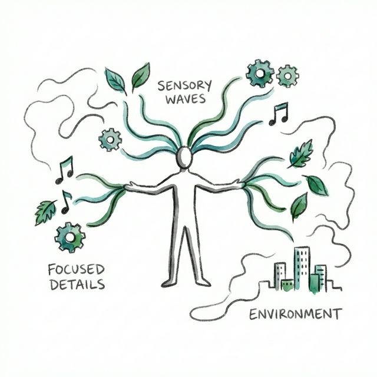
The Mind
The mind offers its own rich territory. Reading, done with full attention, is one of the most commonly reported flow activities across cultures. Writing, solving puzzles, learning history, practicing mathematics, engaging in philosophy: all of these are flow activities if approached with the right structure of goals and skills.
Csikszentmihalyi makes a point that deserves emphasis. The normal state of the mind is not calm. It is chaos.
"Contrary to what we tend to assume, the normal state of the mind is chaos. Without training, and without an object in the external world that demands attention, people are unable to focus their thoughts for more than a few minutes at a time." — Mihaly Csikszentmihalyi
This is why flow feels like relief. It is not excitement layered on top of neutrality. It is order imposed on entropy. When you are fully engaged in a demanding task, the usual static of worry and distraction goes silent. Not because the worries were resolved. Because the task absorbs every available bit of attention.
This is the real function of games, art, and sport in human culture. They are technologies for producing ordered consciousness. They create bounded worlds with clear rules, clear goals, and clear feedback. Within these worlds, the mind can operate at full capacity without the constant interference of open-ended, unresolvable anxieties.
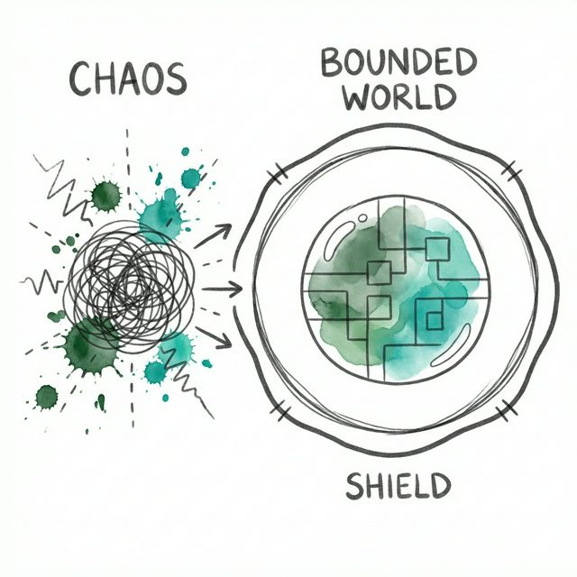
Work
Csikszentmihalyi's most counterintuitive finding may be about work.
Using the Experience Sampling Method, his team found that working people reported entering flow states approximately four times more often at work than while watching television.
This finding upends a central assumption of modern life: that work is what we endure to reach the leisure we enjoy. In reality, when work is structured with clear goals and genuine challenges, it provides flow more reliably than most leisure activities.
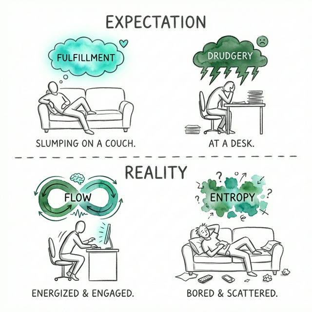
The problem is that people don't always know this. They associate work with obligation and leisure with freedom. So they disengage from work and engage passively with leisure. And they wonder why neither feels satisfying.
Joe Kramer, a welder in a South Chicago railroad plant, understood something his colleagues didn't. Joe had apparently mastered every phase of the factory's operation. He could repair any machine from overhead cranes to electronic monitors. Nobody had trained him formally. He had spent thirty years asking himself: "If I were that machine and I didn't work, what would be wrong with me?" Then he would take it apart and find out.
After work, Joe went home to the rock garden he had built on the adjacent lots he had bought over the years. He had designed sprinkler heads that produced rainbows. When the sun set too early, he installed floodlights that replicated the spectrum needed to make them. He could sit on his porch after a day of welding and surround his house with fans of water, light, and color.
Joe didn't have an exceptional job. He had an exceptional relationship to experience.
But not everyone finds flow as naturally as Joe. What makes some people capable of turning any situation into a flow activity, while others remain bored in paradise?
Module 6: The Autotelic Personality
Not everyone finds flow as easily as Joe Kramer. Csikszentmihalyi identifies a quality he calls the autotelic personality: the capacity to find intrinsic rewards in almost any situation.
The word comes from two Greek roots. Auto means self. Telos means goal. An autotelic person is one who carries their goals within them, rather than depending on external circumstances to provide meaning.
Some component of this may be neurological. Research by Jean Hamilton found that people who frequently reported flow experiences showed lower cortical activation when concentrating on tasks. This is counterintuitive. You might expect that focused attention would show up as higher brain activity. Instead, people who were practiced at flow were able to quiet irrelevant neural activity when concentrating, directing energy precisely to the task at hand. They were, in a measurable sense, more efficient with their psychic energy.
But neurology is not destiny. The autotelic personality can also be cultivated, and childhood environment plays a significant role.
Csikszentmihalyi's team studied families and identified five conditions that produced children who were better at experiencing flow throughout life:
- Clarity: Parents gave clear expectations. Goals were unambiguous.
- Centering: Parents were interested in the child's present experience, not just future success.
- Choice: Children felt free to experiment, including the freedom to break rules if they accepted consequences.
- Commitment: Trust ran deep enough that children could drop their defenses and become fully absorbed.
- Challenge: Parents consistently offered new opportunities that stretched capabilities.
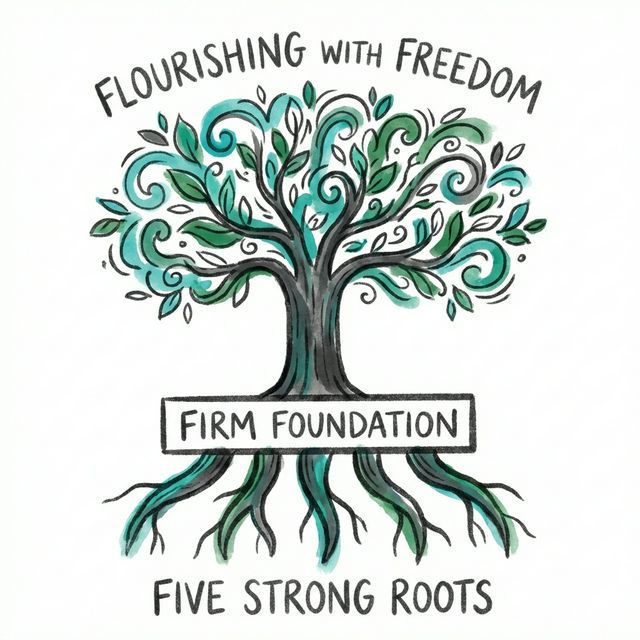
Children from families with these characteristics were measurably happier, stronger, and more engaged, not only at home but at school and even when alone. They had internalized the conditions for flow. They didn't need external structures to produce it.
The capacity for the autotelic personality also depends on one quality Csikszentmihalyi singles out more than any other: non-self-conscious individualism. The people most resilient in adversity, from concentration camp survivors to polar explorers to prisoners held in solitary confinement, were those who bent all their energy toward a purpose that was not primarily self-serving.
Bertrand Russell, asked how he had achieved personal happiness, described the shift plainly: "Gradually I learned to be indifferent to myself and my deficiencies; I came to center my attention increasingly upon external objects: the state of the world, various branches of knowledge, individuals for whom I felt affection."
This outward orientation is not self-neglect. It is self-extension. When attention moves away from the defensive monitoring of the self, it becomes available for genuine contact with the world. And that contact is where flow lives.
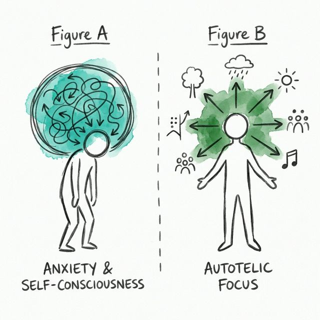
But what happens when the world refuses to cooperate? What happens when adversity is not a temporary inconvenience but a sustained assault on everything a person holds dear?
Module 7: Cheating Chaos
Csikszentmihalyi does not pretend that flow makes life easy. Life delivers real suffering: illness, loss, failure, humiliation, injustice. The question is not whether these things happen. They do.
The question is what happens next.
He describes two modes of response to adversity. The first is regressive coping: withdrawal, denial, displacement of anger, numbing. This reduces short-term distress but does not restore the capacity to engage. It shrinks the self.
The second is transformational coping: keeping attention focused outward, reinterpreting the situation, finding the challenge within it. This is harder. It requires more from a person in their worst moments. But it is also what distinguishes those who survive adversity from those who are destroyed by it.
The clearest examples come from extreme conditions. Christopher Burney, a British prisoner held in solitary confinement by the Nazis, described how he kept his mind ordered by turning the barren cell into a source of inquiry. He measured its dimensions, catalogued its features, asked systematic questions about everything he could see or touch. "So we set in train a wonderful flow of combinations and associations in our minds," he wrote.
Tollas Tibor, a Hungarian poet imprisoned during the communist repression, organized a poetry translation contest among inmates held in separate cells. Nominations circulated for months through ingenious secret messages. Votes were tallied. The winning poem, Walt Whitman's O Captain! My Captain!, was translated independently by dozens of prisoners, each version carved in soap with a toothpick, memorized, and passed from cell to cell.
These people did not transcend their circumstances. They transformed their relationship to them. They found within the constraints of captivity a structure of goals, challenges, and feedback that generated flow.
Csikszentmihalyi draws an analogy to dissipative structures, the concept developed by Nobel Prize-winning chemist Ilya Prigogine. A dissipative structure is a physical system that sustains itself by capturing and reorganizing energy that would otherwise be lost to entropy. A plant is a dissipative structure. It takes sunlight, which would otherwise disperse as random heat, and builds it into leaves and bark and fruit.
The psyche can operate the same way. Getting fired, becoming ill, losing a relationship: these are negative inputs that ordinarily produce disorder. The autotelic self treats them as raw material. Not because suffering is good, but because the alternative is worse. The only difference between a person who grows from adversity and one who is crushed by it is whether they can find a new flow activity within the new conditions.
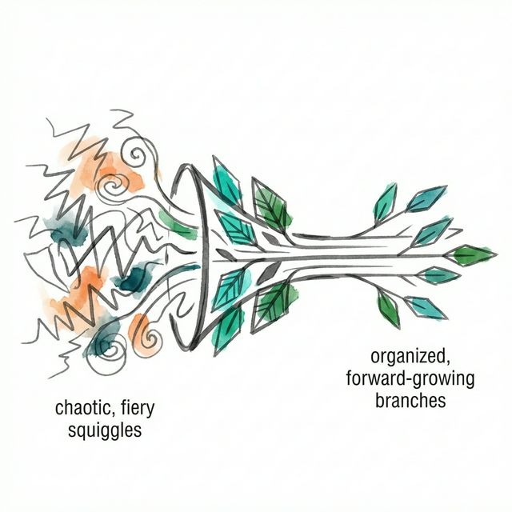
There are three steps in this transformation:
- Unselfconscious self-assurance. Trust that your resources are sufficient without being consumed by self-protection.
- Focusing attention on the world. Keep looking outward at what the situation actually is, rather than inward at how frightening it feels.
- Discovering new solutions. Let the situation suggest possibilities you hadn't considered before.
This is not cheerfulness. It is not optimism in the motivational sense. It is closer to a practical skill: the ability to remain engaged with reality even when reality is hostile.
The psyche that masters this skill has one more task ahead: stitching together all its flow experiences into something coherent, something that lasts beyond any single activity or moment.
Module 8: The Making of Meaning
Flow in individual moments is not enough. A life made entirely of disconnected flow activities, however enjoyable, lacks coherence.
Bobby Fischer was perhaps the greatest chess player who ever lived. He experienced deep flow at the board. Away from it, he was lost. The chess world gave his consciousness order. Without it, he fell apart.
Csikszentmihalyi's final argument is about what it means to turn an entire life into flow. This requires more than finding good activities. It requires what he calls a life theme: a unifying purpose around which all lesser goals are organized.
A life theme is not a vague aspiration. It is a magnetic field that orients all other goals. It makes every action either a step toward or away from something that matters. This constant orientation produces what Csikszentmihalyi calls inner harmony: a state where thoughts, feelings, and actions are no longer in conflict.
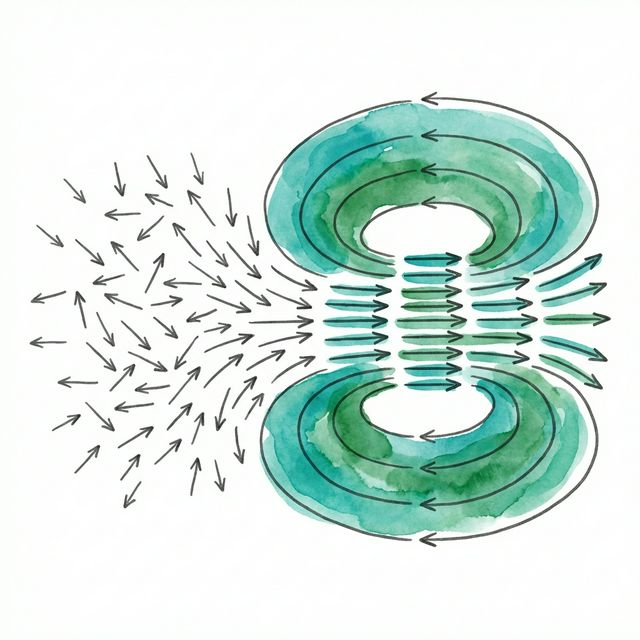
The three components of a meaningful life are:
- Purpose: a goal compelling enough to organize all other goals beneath it.
- Resolution: the willingness to pursue that goal despite real cost, not just inconvenience.
- Harmony: the inner congruence that comes when purpose and action align.
The most powerful life themes, Csikszentmihalyi observes, are often forged from early adversity. E., a man he interviewed, was seven years old when a wealthy doctor hit him with a car, promised to pay his bills, and never came back. His immigrant family borrowed money they couldn't afford. His father, humiliated, withdrew into drinking.
Years later, E. read the U.S. Constitution and the Bill of Rights in school. He connected the language of those documents to what had happened to his family. The problem was not individual cruelty. It was systemic helplessness. He decided to become a lawyer, not for himself, but so that people in his position would have representation.
He became a judge. Then a cabinet official. He spent decades shaping civil rights legislation.
The trauma of that car accident, unremedied and unjust, became the source of a purpose that organized sixty years of a life. The suffering did not disappear. It was reinterpreted as a challenge. And that reinterpretation changed everything.
Csikszentmihalyi is careful to note that there is no objectively correct life theme. Napoleon and Mother Teresa may both have achieved equally unified inner lives, organized around purposes as different as conquest and service. What matters psychologically is not the content but the structure: whether a person has found something large enough and real enough to give direction to everything else.
Without this, even a life full of pleasant flow experiences can feel empty.
The opposite of meaning is not suffering. It is drift.
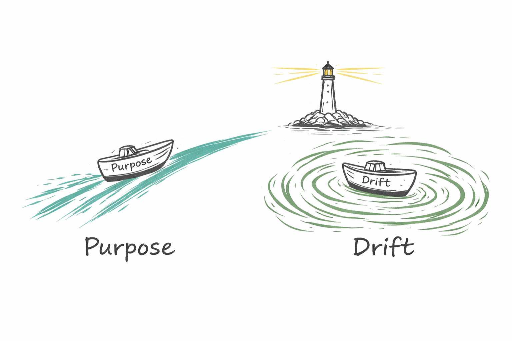
Conclusion
Return now to Serafina Vinon in the Italian Alps, who wakes at five every morning to milk her cows.
At first she seemed like a relic. A woman so embedded in traditional life that she couldn't imagine anything else. But that reading was too easy.
Serafina has seen the alternatives. Her relatives live in cities, drive cars, take exotic vacations. She knows what modern life looks like. And she has chosen something different, deliberately and without regret, because it provides something their more fashionable lives do not.
Every task she does is connected to every other task. The cows she milks produce the milk she serves to visitors. The orchard she tends produces fruit her grandchildren will eat. The wool she cards becomes garments worn by people she loves. Nothing she does is separate from the larger whole. Her life is one unbroken flow experience stretching from dawn to dusk and across generations.
This is what Csikszentmihalyi means by the psychology of optimal experience.
Not ecstasy. Not peak moments reserved for athletes and artists. A woven fabric of engagement where even ordinary tasks have weight because they connect to something that matters.
The discovery he made decades before writing this book was simple. Happiness is not something that happens. It is something you build. Not by chasing it, but by investing psychic energy in activities worthy of your attention, skills worthy of development, and purposes worthy of a life.
You already have the raw material. Every moment of attention you possess is a resource.
The question is only where it goes.
Every week, one book gets this treatment — fully structured, nothing skipped. Find them all at longform.online